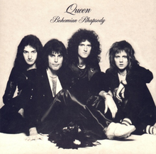

Melody, Lyrics, Love.
OPM
Official Pinoy/Pilipino Music. Every Pinoy has one OPM song that they love/relate to, so much.
In this case, I have three OPM songs that I love to hear almost everyday of my life.
|
Jopay, by the band called 'Mayonnaise' lend by the main vocalist, Monty Macalino. It's a story of Monty seeing 'Jopay' A.K.A Diofanny Jane Paguia, crying on TV. Story goes that Monty suddenly saw Jopay crying on TV and he is a fan of Jopay so seeing his idol like that feeled his heart with emotions and from that, he made this song. |
Ang Huling El Bimbo, by the band 'Eraserheads' lend by the main vocalist, Ely Buendia. A love story that every Pinoy knows. It's about a boy that didn't confessed his feeling to his 'Paraluman' or crush whom thought him how to dance then they parted until the last he heard from her is that she died and he will never get to dance with her again. |
The Yes Yes Show, by the band 'Parokya Ni Edgar' led by the main vocalist, Chito Miranda. One of the most iconic bands that arise from the Philippines. The song isn't much on a meaning, but it does showcase the friendship of the band and no matter how much they fight, they will not split. |

|
||
|
Mayonnaise - Jopay |
Eraserheads - Ang Huling El Bimbo |
Parokya Ni Edgar - The Yes Yes Show |
| Play Pause Seeking Volume auto metadata none |
Minecraft Parodies
Every miner knows what these songs is about. You have to be a miner though.
Otherwise, these songs won't make much sense.
*Miner is a term for someone who plays Minecraft regularly.
|
Don't Mine At Night, by the YOGSCAST. The song is a parody of Katy Perry's Last Firday Night about why you should not mine at night in Minecraft. YOGSCAST is a Minecraft Podcast Youtube channel which posts videos about the latest news about Minecraft and tutorials on how to build stuff. Don't Mine At Night is something to keep in mind when playing Minecraft since a lot of enemies spawn at night and you will have a tough time getting to your home. Possibly, losing all your hard-earned stuff. |
New World, by Sky Does Minecraft A.K.A Adam Dahlberg. The song is a parody of Coldplay's Paradise. Sky Does Minecraft is also a Minecraft Youtube channel that posts funny and entertaining Minecraft content for children or even all that plays Minecraft. The song is about someone who plays Minecraft for the first time that person will have a lot of question on what is this world, it is made of blocks. |
Take Back the Night, by TryHardNinja A.K.A Igor Gordienko. TryHardNinja is notable for making songs and music videos based around various games. Mostly, he does songs for Minecraft. Take Back the Night is a sequel to the story "Fallen Kingdom" which is another song from TryhardNinja. It's about a son who is trying to find his father whom is king of a kingdom, because he just suddenly vanished after the kingdom was attacked. |

|

|
|
|
YOGSCAST - Don't Mine At Night |
Sky Does Minecraft - New World |
CaptainSparklez - Take Back the Night |
Queen
Queen is a genre on it's own. The band Queen is led by the one and only, Freddie Mercury.
Not one song can really compare to what Queen has published.
Queen covered every genre you can think of, Pop, Rock, Opera. Any genre, Queen has it.
|
Crazy Little Thing Called Love. The title speaks for itself. Love can be a crazy little thing. It can make you all sort of things. It can make you a fool, out of your mind, or delusional. But it can also be your founded happiness. |
Bohemian Rhapsody. The best song I have ever heard. Remember when I said 'Queen has every genre covered'?. This is that song. Bohemian Rhapsody is a big mix of an intro, a ballad segment, a guitar solo, an operatic section, a hard rock part, and a reflective outro coda. Also, It has no chorus. |
Radio Ga Ga. The song talks about how everyone just suddenly forgot the Radio. At the time, they stuck their eyes on the TV and only remember the radio when we don't have access to the TV. We can apply this today where we have our smartphones now. We barely know what a radio does. We hardly need to use our ears to understand what is going on. |

|
 |

|
|
Queen - Crazy Little Thing Called Love |
Queen - Bohemian Rhapsody |
Queen - Radio Ga Ga |